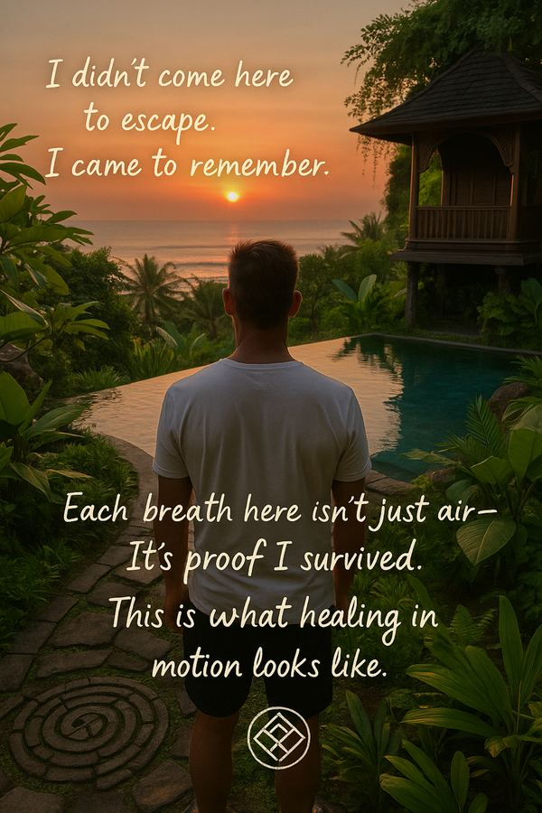

01 · UNDERSTAND
See the pattern
Explore what is happening, where you feel stuck and what is taking your energy.
One-to-one clarity · Bali & online
When life feels complicated, you don't need more noise. You need space to understand what's happening, decide what matters and take your next step.
Practical, personal guidance with Mark Tulloch.

A simpler way forward
Conscious Systems brings lived experience and practical frameworks together to help you recognise patterns and make considered choices.
01 · UNDERSTAND
Explore what is happening, where you feel stuck and what is taking your energy.
02 · ALIGN
Identify what matters now and the changes that would make a meaningful difference.
03 · EVOLVE
Leave with practical priorities you can return to in everyday life.
Work with Mark
Start with one conversation, or explore a more structured process. Ask about current session details and availability.
START HERE
A focused one-to-one conversation to unpack a specific challenge and identify a useful next step.
GO DEEPER
A structured session to examine patterns, priorities and the direction you want to take.
CONTINUE
Explore a multi-step realignment or continued support as you put your insights into practice.
Session formats and fees are confirmed before booking. These sessions are not a substitute for medical or mental-health treatment.

Meet your guide
After decades leading teams and businesses in hospitality, Mark created Conscious Systems to share practical lessons about clarity, resilience and personal direction.
His approach combines lived experience, reflection and straightforward frameworks rather than complicated theory.
Start a conversationFrequently asked questions
Adults looking for greater clarity around personal direction, priorities, change or leadership challenges.
Yes. Sessions can be discussed for Bali or online, subject to availability.
No. You can begin by enquiring about a single session and decide whether further work makes sense.
No. Conscious Systems offers personal guidance and practical reflection, not diagnosis, clinical treatment or emergency support.
Your next step
Tell Mark what you are working through and ask which session would be a useful starting point.
Enquire about a sessionBali, Indonesia · Online enquiries welcome